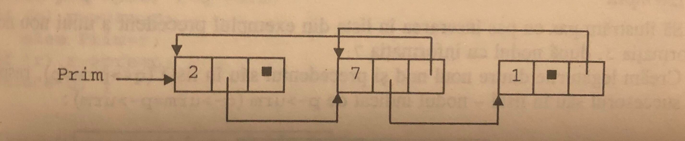

O lista dublu inlanțuită este o structură de date constituită dintr-o succesiune de elemente denumite noduri. Fiecare nod din listă conține 3 părți: o parte de informație (în care sunt memorate informațiile corespunzătoare nodului, specifice problemei) și două părți de legatura (în care este memorată adresa următorului element din listă și respectiv adresa precedentului element din listă).
Declarația structurii care reprezintă un nod dintr-o listă dublu înlănțuită cu informații întregi va fi:
struct nod
{
int inf;
struct nod *urm, *pre;
};
typedef struct nod *lista;
Putem figura o listă dublu înlănțuită cu elemente întregi astfel:
Pentru inserare vom implementa o funcție denumită Inserare cu 3 parametrii:
Vom aloca dinamic memorie pentru un nou nod, a cărui adresă o vom reține în variabila pointer
q. În zona de informații vom memora valoarea x (q -> inf) = x.
La inserare apar două cazuri distincte:
Să ilustrăm pas cu pas inserarea la începutul listei din exemplul precedent a unui nod, cu informația 3, nod al carui adresă va fi memorat in pointerul q:

În cel de-al doilea caz trebuie sa inserăm noul nod după nodul a cărui adresă este memorată in parametrul p.
Să ilustrăm pas cu pas inserarea in lista din exemplul precedent a unui nod cu informația 3, după nodul cu informația 7
void insert(lista &prim, lista p, int x)
{
lista q = new nod;
q -< inf = x;
p -> pre = p;
if(!p) //inserarea la inceputul listei
{
if (prim) prim -> pre = q;
prim = q;
}
}
Pentru ștergere vom implementa o funcție numită delete cu 2 parametrii:
Pentru simplitate, vom utiliza 2 pointeri suplimentari, p care reține adresa nodului ce preceda nodul de șters și r care reține adresa nodului ce succedă nodul de șters. Dacă p == NULL va fi șters primul nod din listă și va trebui să actualizăm valoarea parametrului prim.
void delete(lista & prim, lista q)
{
lista p = q -> pre,
r = q -> urm;
if (p) p -> urm = r;
else prim = r;
if (r) r -> pre = p;
delete q;
}
Consultarea unei liste dublu înlănțuite se realizează in mod similar cu cea a unei liste simplu înlănțuite, numai că o listă dublu înlănțuită poate fi consultată atât in sens direct (utilizând legaturile urm), cât și în sens invers (utilizând legaturile pre).